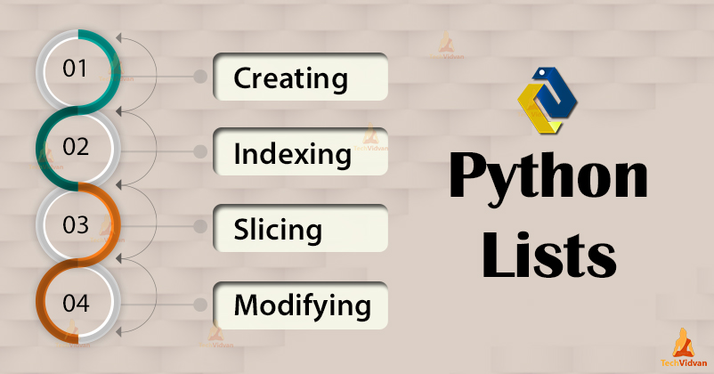
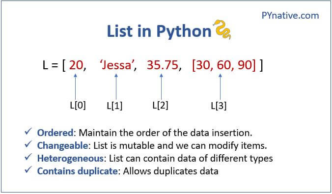
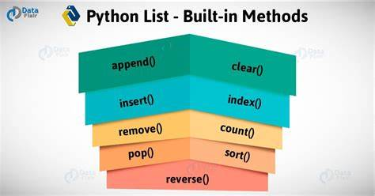
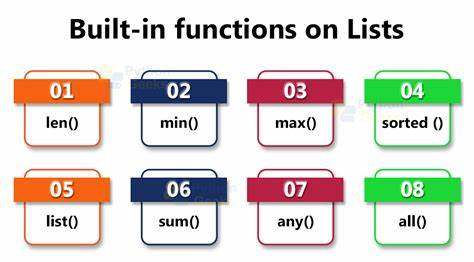

Lists
Contents
Lists¶
We have seen Python’s simple types: int, float, bool, str, and so on. Python also has several built-in compound types, which act as containers for other types. Now we will see other data types in detail.

Lets understand list data type. List can contain multiple values, which makes it easier to write programs that handle large amounts of data. And since lists themselves can contain other lists, you can use them to arrange data into hierarchical structures.
In this chapter you will learn basics of list it’s methods and various operations which can be performed on lists.
List data type¶

A list is a data-structure that contains multiple values in an ordered sequence. Just as string values are typed with quote characters to mark where the string begins and ends, a list begins with an opening square bracket and ends with a closing square bracket, [ ]. Values inside the list are also called items. Items are separated with commas (that is, they are comma-delimited).
Let’s start with create a list of integers
[1,2,3]
[1, 2, 3]
Create a list of stuff from your bagpack.
['pen', 'pencil', 'eraser', 'books']
['pen', 'pencil', 'eraser', 'books']
List can contain multiple values of different datatypes as below.
['hello', 3.1415, True, None, 42]
['hello', 3.1415, True, None, 42]
Let’s use the list we have defined before, list of stuff from your backpack and store it in variable named example.
example = ['pen', 'pencil', 'eraser', 'books']
example
['pen', 'pencil', 'eraser', 'books']
Note
The value [ ] is an empty list that contains no values, similar to ‘’, the empty string.
Indexes¶
Say you have the list [‘pen’, ‘pencil’, ‘eraser’, ‘books’] stored in a variable named example. The Python code example[0] would evaluate to ‘pen’, and example[1] would evaluate to ‘pencil’, and so on. The integer inside the square brackets that follows the list is called an index. The first value in the list is at index 0, the second value is at index 1, the third value is at index 2, and so on.
Let’s see how to use indexes to access the values from list. Try to access ‘pen’ the first value from list example whose index is going to be 0.
example[0]
'pen'
Again try access ‘books’. So, to get ‘books’value which is at fourth position index is going to be 3.
example[3]
'books'
If you have not stored the list in variable still you can access values from list.
['pen', 'pencil', 'eraser', 'books'][3]
'books'
You can also use list items as variables in expressions.
'I have ' + example[0]
'I have pen'
'The ' + example[1] + ' and the ' + example[0] + '.'
'The pencil and the pen.'
Notice that the expression ‘I have ‘ + example[0] evaluates to ‘I have ‘ + ‘pen’ because example[0] evaluates to the string ‘pen’. This expression in turn evaluates to the string value ‘I have pen’.
Python will give you an IndexError error message if you use an index that exceeds the number of values in your list value.
example[1000]
---------------------------------------------------------------------------
IndexError Traceback (most recent call last)
<ipython-input-10-0f6c79ef1a48> in <cell line: 1>()
----> 1 example[1000]
IndexError: list index out of range
Indexes can be only integer values, not floats. The following example will cause a TypeError error.
example[1]
'pencil'
example[1.0]
---------------------------------------------------------------------------
TypeError Traceback (most recent call last)
<ipython-input-12-9e6e21b5d8f1> in <cell line: 1>()
----> 1 example[1.0]
TypeError: list indices must be integers or slices, not float
example[int(1.0)]
'pencil'
Lists can also contain other list values. The values in these lists of lists can be accessed using multiple indexes, like so:
example = [['pen', 'pencil'], [10, 20, 30, 40, 50]]
this is called Nested List
example[0]
['pen', 'pencil']
example[0][1]
'pencil'
example[1][4]
50
The first index dictates which list to use, and the second indicates the value within that list. For example, example[0][1] prints ‘pencil’, the second value in the first list. If you only use one index, the program will print the full list value at that index.
Negative Indexes¶
While indexes start at 0 and go up, you can also use negative integers for the index. The integer value -1 refers to the last index in a list, the value -2 refers to the second-to-last index in a list, and so on.

example = ['pen', 'pencil', 'eraser', 'books']
example[-1]
'books'
example[-3]
'pencil'
'We write in ' + example[-1] + ' using ' + example[-3] + '.'
'We write in books using pencil.'
Slicing¶
Just as an index can get a single value from a list, a slice can get several values from a list, in the form of a new list. A slice is typed between square brackets, like an index, but it has two integers separated by a colon. Notice the difference between indexes and slices.
example[2] is a list with an index (one integer).
example[1:4] is a list with a slice (two integers).
In a slice, the first integer is the index where the slice starts. The second integer is the index where the slice ends. A slice goes up to, but will not include, the value at the second index. A slice evaluates to a new list value
example = ['pen', 'pencil', 'eraser', 'books']
example[0:4]
['pen', 'pencil', 'eraser', 'books']
example[1:3]
['pencil', 'eraser']
example[0:-1]
['pen', 'pencil', 'eraser']
As a shortcut, you can leave out one or both of the indexes on either side of the colon in the slice. Leaving out the first index is the same as using 0, or the beginning of the list. Leaving out the second index is the same as using the length of the list, which will slice to the end of the list.
example[:2]
['pen', 'pencil']
example[1:]
['pencil', 'eraser', 'books']
example[:]
['pen', 'pencil', 'eraser', 'books']
Changing Values¶
Normally a variable name goes on the left side of an assignment statement, like example = 42. However, you can also use an index of a list to change the value at that index. For example, example[1] = ‘scale’ means “assign the value at index 1 in the list example to the string ‘scale’”.
example = ['pen', 'pencil', 'eraser', 'books']
example[1] = 'scale'
example
['pen', 'scale', 'eraser', 'books']
example[2] = example[1]
example
['pen', 'scale', 'scale', 'books']
example[-1] = 12345
example
['pen', 'scale', 'scale', 12345]
List Methods¶

Adding values¶
1 . append() method¶
To add new values to a list, use the append() method. Let’s call the append() method on a list value stored in the variable items.
items = ['pen', 'pencil', 'bat']
items.append('ball')
items
['pen', 'pencil', 'bat', 'ball']
2 . insert() method¶
The previous append() method call adds the argument to the end of the list. The insert() method can insert a value at any index in the list. The first argument to insert() is the index for the new value, and the second argument is the new value to be inserted.
items = ['pen', 'pencil', 'bat']
items.insert(1, 'phone')
items
['pen', 'phone', 'pencil', 'bat']
Note
Notice that the code is items.append(‘ball’) and items.insert(1, ‘phone’), not items = items.append(‘ball’) and items = items.insert(1, ‘phone’). Neither append() nor insert() gives the new value of items as its return value. (In fact, the return value of append() and insert() is None, so you definitely wouldn’t want to store this as the new variable value.) Rather, the list is modified in place
Removing Values¶
1 . del statement¶
The del statement will delete values at an index in a list. All of the values in the list after the deleted value will be moved up one index.
example = ['pen', 'pencil', 'eraser', 'books']
del example[2]
example
['pen', 'pencil', 'books']
del example[2]
example
['pen', 'pencil']
The del statement can also be used on a simple variable to delete it, as if it were an “unassignment” statement. If you try to use the variable after deleting it, you will get a NameError error because the variable no longer exists.
In practice, you almost never need to delete simple variables. The del statement is mostly used to delete values from lists.
2 . remove() method¶
The remove() method is passed the value to be removed from the list it is called on.
example = ['pen', 'pencil', 'eraser', 'books']
example.remove('pencil')
example
['pen', 'eraser', 'books']
Attempting to delete a value that does not exist in the list will result in a ValueError error
example.remove('phone')
---------------------------------------------------------------------------
ValueError Traceback (most recent call last)
<ipython-input-12-9a1e51614139> in <cell line: 1>()
----> 1 example.remove('phone')
ValueError: list.remove(x): x not in list
If the value appears multiple times in the list, only the first instance of the value will be removed
example = ['pen', 'pencil', 'bat', 'cat', 'hat', 'cat']
example.remove('cat')
example
['pen', 'pencil', 'bat', 'hat', 'cat']
The del statement is good to use when you know the index of the value you want to remove from the list. The remove() method is good when you know the value you want to remove from the list.
3 . pop() method¶
the pop() method is a built-in method that can be used to remove and return an item from a list.
my_list = ['apple', 'banana', 'cherry', 'date']
removed_item = my_list.pop(2) # Removes the item at index 2 (i.e., 'cherry')
print(my_list) # Output: ['apple', 'banana', 'date']
print(removed_item) # Output: 'cherry'
['apple', 'banana', 'date']
cherry
Just like with a list of any other data type, calling pop() without passing an index will remove and return the last item in the list:
my_list = ['apple', 'banana', 'cherry', 'date']
last_item = my_list.pop()
print(my_list) # Output: ['apple', 'banana', 'cherry']
print(last_item) # Output: 'date'
['apple', 'banana', 'cherry']
date
count() method¶
The count() method is used to count the number of occurrences of a specified element in a list. Here’s an example:
my_list = [1, 2, 3, 2, 4, 2, 5]
count_of_twos = my_list.count(2)
print(count_of_twos) # Output: 3
3
sort() method¶
The sort() method is used to sort the elements of a list in ascending or descending order. Here’s an example:
my_list = [5, 1, 4, 3, 2]
my_list.sort()
print(my_list) # Output: [1, 2, 3, 4, 5]
[1, 2, 3, 4, 5]
reverse()¶
The reverse() method is used to reverse the order of the elements in a list. Here’s an example:
my_list = [1, 2, 3, 4, 5]
my_list.reverse()
print(my_list) # Output: [5, 4, 3, 2, 1]
[5, 4, 3, 2, 1]
clear() method¶
The clear() method is used to remove all elements from a list. Here’s an example:
my_list = [1, 2, 3, 4, 5]
my_list.clear()
print(my_list) # Output: []
[]
extend() method¶
you can extend a list by using the extend() method. The extend() method appends all the items from an iterable (e.g., list, tuple, string) to the end of the original list.
Here’s an example:
original_list = [1, 2, 3]
new_list = [4, 5, 6]
original_list.extend(new_list)
print(original_list)
[1, 2, 3, 4, 5, 6]
index() method¶
The index() method is used to find the index of the first occurrence of a specified element in a list. Here’s an example:
my_list = [1, 2, 3, 2, 4, 2, 5]
index_of_twos = my_list.index(2)
print(index_of_twos) # Output: 1
1
Arithmatic operators in list¶
1 . List Concatenation¶
The + operator can combine two lists to create a new list value in the same way it combines two strings into a new string value.
[1, 2, 3] + ['A', 'B', 'C']
[1, 2, 3, 'A', 'B', 'C']
2 . List Replication¶
The * operator can also be used with a list and an integer value to replicate the list.
['X', 'Y', 'Z'] * 3
['X', 'Y', 'Z', 'X', 'Y', 'Z', 'X', 'Y', 'Z']
Traversing a List¶
1 . Using for loop¶
my_list = [1, 2, 3, 4, 5]
for item in my_list:
print(item)
1
2
3
4
5
2 . Using range()¶
using range() we can access each element of list using index of list.
my_list = [1, 2, 3, 4, 5]
for i in range(len(my_list)):
print('element of list : ',my_list[i],' & ','index of element : ',i)
element of list : 1 & index of element : 0
element of list : 2 & index of element : 1
element of list : 3 & index of element : 2
element of list : 4 & index of element : 3
element of list : 5 & index of element : 4
3 . Using the enumerator()¶
my_list = [1, 2, 3, 4, 5]
for i, item in enumerate(my_list):
print(i, item)
0 1
1 2
2 3
3 4
4 5
Built-in list functions¶

len( )¶
– It calculates the length of the list.
max( )¶
– It returns the item from the list with the highest value.
min( )¶
– It returns the item from the Python list with the lowest value.
sum( )¶
– It returns the sum of all the elements in the list.
sorted( )¶
– It returns a sorted version of the list, but does not change the original one.
list( )¶
– It converts a different data type into a list.
any( )¶
– It returns True if even one item in the Python list has a True value.
all( )¶
– It returns True if all items in the list have a True value.
num = [7,2,5,8,6,4,3]
print('length ',len(num))
print('maximum value ',max(num))
print('minimum value ',min(num))
print('sum of list ',sum(num))
print('sorted list ',sorted(num))
print('list ',list(num))
print('using any ',any(num))
print('using all ',all(num))
length 7
maximum value 8
minimum value 2
sum of list 35
sorted list [2, 3, 4, 5, 6, 7, 8]
list [7, 2, 5, 8, 6, 4, 3]
using any True
using all True
List and Strings¶
1 . List function¶
The list() function is used to convert an iterable (such as a string) into a list. When you apply the list() function to a string, it will return a list of individual characters from the string.
Here’s an example:
my_string = "hello"
my_list = list(my_string)
print(my_list)
['h', 'e', 'l', 'l', 'o']
2 . split function¶
The split() method is used to split a string into a list of substrings based on a specified delimiter.
my_string = "I am Data Scientist"
my_list = my_string.split(" ")
print(my_list)
['I', 'am', 'Data', 'Scientist']
3 . join()¶
The join() method is used to concatenate a list of strings into a single string, using a specified delimiter.
my_list = ['Hello', 'world!', 'How', 'are', 'you?']
my_string = ' '.join(my_list)
print(my_string)
Hello world! How are you?
List comprehension¶
List comprehensions are simply a way to compress a list-building for-loop into a single short, readable line.
For example, here is a loop that constructs a list of the first 12 square integers:
L = []
for n in range(12):
L.append(n ** 2)
L
[0, 1, 4, 9, 16, 25, 36, 49, 64, 81, 100, 121]
This basic syntax is,
[expr for var in iterable]
where,
expr is any valid expression,
var is a variable name, and
iterable is any iterable Python object.
The list comprehension equivalent of this is the following:
[n**2 for n in range(12)]
[0, 1, 4, 9, 16, 25, 36, 49, 64, 81, 100, 121]
[i for i in range(20) if i % 3 == 0]
[0, 3, 6, 9, 12, 15, 18]
Practice Questions¶
Difficulty Level : Easy¶
Q. Create a code that will reverse a given list.
Example :
list1 = [8, 6, 4, 2, 0]
[0, 2, 4, 6, 8]
## your code ##
Q. Create a code that will display the square of every element of the list provided as an argument.
Example :
list2 = [1, 2, 3, 4, 5]
1 4 9 16 25
## your code ##
Q. Create a code that will take list of fruits and a new_fruit as 2 arguments. Add the new_fruit into the list of fruits and display the updated list. Also, try adding the new_fruit at the index position 2.
Example :
fruits = [‘banana’, ‘orange’, ‘mango’, ‘lemon’]
new_fruit = ‘blueberry’
[‘banana’, ‘orange’, ‘mango’, ‘lemon’, ‘blueberry’]
[‘banana’, ‘orange’,’blueberry’ ,’mango’, ‘lemon’,]
## your code ##
Q. Create a code that will take a list as an argument and return an updated list after removing empty strings from the list.
Example :
list3 = [“Vivek”, “”, “Ankur”, “aiadventures”, “”, “Pranav”].
[‘Vivek’, ‘Ankur’, ‘aiadventures’, ‘Pranav’]
Difficulty Level : Medium¶
Q. Create a code that takes 2 lists as arguments and it iterates over both lists simultaneously such that output should display items in original order from 1st list and elements from 2nd list in reverse order.
Note : Please give attention to the output as it doesn’t include [ ] brackets.
Example :
list4 = [10, 20, 30, 40]
list5 = [100, 200, 300, 400]
10 20 30 40 400 300 200 100
## your code ##
Q. Create a code that takes 2 lists as arguments and returns a new single list by performing the string replication between the elements of the lists. The elements should be selected in original order from the 1st list and in reverse order from the 2nd list.
Example :
list4 = [‘Ai’, ‘Adventures’, ‘Python’, ‘ML’]
list5 = [1, 2, 3, 4]
[‘AiAiAiAi’, ‘AdventuresAdventuresAdventures’, ‘PythonPython’,’ML’]
## your code ##
Q. Create a code which accept list of N integers and partition list into two sub lists even & odd numbers.
Example :
list1=[1,2,3,4,5,6,7,8,9,10]
even_list=[2,4,6,8,10]
odd_list=[1,3,5,7,9]
## your code ##
Difficulty Level : Hard¶
Q. We’re using lists to record people that attended our party and in the order they arrive in. For example, the following list represents a party with 7 guests, in which Adela showed up first and Ford was the last to arrive:
party_attendees = [‘Adela’, ‘Fleda’, ‘Owen’, ‘May’, ‘Mona’, ‘Gilbert’, ‘Ford’]
A guest is considered fashionably late if they arrived after at least half of the party’s guests. However, they must not be the very last guest (that’s taking it too far). In the above example, Mona and Gilbert are the only guests who were fashionably late.
Create a code which takes a list of party attendees as well as a person as arguments and displays whether that person is fashionably late or not.
Example :
party_attendees = [‘Adela’, ‘Fleda’, ‘Owen’, ‘May’, ‘Mona’, ‘Gilbert’, ‘Ford’]
name= ‘ Mona ‘
True
name= ‘ Ford ‘
False
## your code ##
Q. Create a code that takes 2 lists as arguments. The function should create a new list that contains alternate elements of both the lists and replaces the string elements of the new list with its own length.
Note : Use loops to update the empty lists.
Example- 1:
first = [‘Ai’, ‘Adventures’, ‘Python’]
second = [10, 20, 30]
List with alternate elements from the above 2 lists : [‘Ai’, 10, ‘Adventures’, 20, ‘Python’, 30]
Final output list : [2, 10, 10, 20, 6, 30]
Example- 2
first = [‘Jan’, ‘February’, ‘March’, 72]
second = [10, 20, 30, ‘April’]
List with alternate elements from the above 2 lists : [‘Jan’, 10, ‘February’, 20, ‘March’, 30, 72, ‘April’]
Final output list : [3, 10, 8, 20, 5, 30, 72, 5]
## your code ##